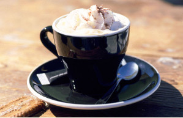

Phân biệt 5 hình thức khác nhau

- Ở các nước Đức, Thụy Sĩ và Mỹ người ta pha cà phê bằng cách cho nước sôi chảy qua
một cái túi lọc chứa bột cà phê. Cách thức này được Melitta Bentz phát minh ra vào năm 1908.
- Phổ biến nhất ở Ý là cà phê espresso. Loại cà phê này được pha bằng cách cho nước
bị ép dưới áp suấp cao chảy qua cà phê xay cực mịn. Cách pha này sẽ tạo ra một lớp kem từ dầu cà phê.
- Thổ Nhĩ Kỳ và các nước vùng Balkan pha cà phê theo "kiểu Thổ Nhĩ Kỳ". Theo cách này
cà phê xay mịn, đường và nước được cho vào một loại ấm mỏng hình chóp rồi đun lên. (xem thêm Mokka)
- Pha kiểu Pháp: kiểu pha này khá nổi tiếng và cũng rất gần gũi với nhiều người. Họ dùng một
loại bình gọi là French press có cấu tạo tương tự như phin cà phê của Việt Nam. Bột cà phê được
cho vào trong bình rồi dùng một miếng lọc bằng kim loại ép lên trên (press), sau đó rót nước sôi
vào và đậy nắp lại. Nước sôi sẽ qua miếng lọc rồi thấm dần vào bột cà phê. Do tốc độ chảy của nước khi qua miếng
lọc rất chậm nên cà phê sẽ rất đặc.
- Cà phê tan: loại cà phê chỉ cần đổ nước nóng vào, khuấy lên là có thể uống ngay.
Trên cơ sở năm cách pha chế trên mà ngày nay người ta phát minh ra hàng trăm công thức pha cà phê
cũng như hàng ngàn món đồ uống có chứa cà phê. Nhiều cách thức đòi hỏi phải có máy pha cà phê chuyên dụng.